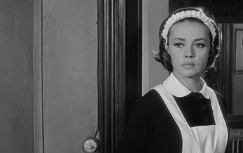
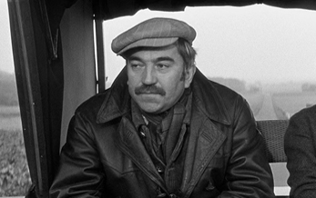
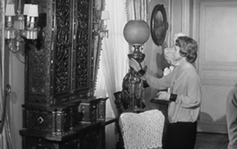
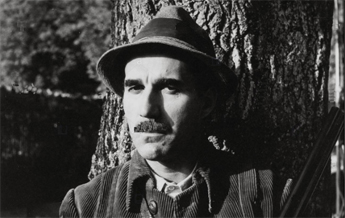
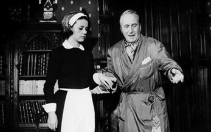
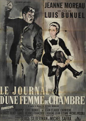
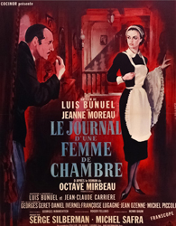
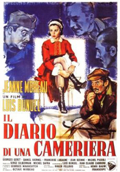
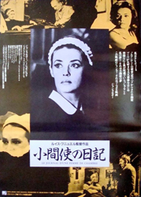

Jeanne Moreau - Célestine
Georges Géret - Joseph


Françoise Lugagne - Madame Monteil
Michel Piccoli - Monsieur Monteil


Jean Ozenne - Monsieur Rabour
Le secrétaire du commissaire
Captain Mauger
A stylish, attractive young woman, Célestine, steps off the train from Paris into a waiting buggy from the chateau, its driver already eyeing her, with designs which he expresses by remarking on her shoes. She is the new chambermaid for an odd family at their country estate. The period is mid-1930s, and the populace is astir with extremist politics, right and left. The Monteils' household consists of a childless couple, the frigid wife's elderly, genteel father, and several servants, including Joseph the groom who is a rightist, nationalist, anti-Semitic, violent man. The wife runs a rigidly tidy house; she would like to please her virile husband physically, but cannot, due to "pelvic pain". Her husband amuses himself by hunting small game and pursuing all the females within range - the previous chambermaid seems to have left pregnant and had to be "bought off".
The wife's father amuses himself with his collection of racy postcards and novels, and a closet full of women's shoes and boots, that he likes his chambermaids to model. Their next-door neighbour is a burly, retired Army officer, with a chubby maid / mistress, and an odd streak of his own - he likes to throw refuse and stones over the fence, to the great annoyance of M Monteil. To the maid's role, (in this household chiefly determined by sexual proclivities of other characters) Célestine adapts quickly, and through her own insight as well as through convivial gossip from kitchen staff, she begins to employ her own female assets conveniently, a practical behaviour providing her some security, in her varied domestic relations or encounters.
The elderly father, M Rabour, is found dead in bed, disheveled, clutching some boots that Célestine had worn earlier that evening; and Célestine decides to leave the job the next day. Previously, however, she had become motherly and protective of a sweet pre-pubescent girl named Claire who visited the house. After the girl's raped and mutilated body is found in a nearby wood, Célestine decides to stay on at the job, in order to get revenge on the murderer. She quickly finds reason to suspect the groom Joseph. She seduces and promises to marry him and join him to run a café in Cherbourg, so he will confess the crime to her, which he does not. She then contrives and plants evidence to implicate him in the girl's murder. He is arrested, but eventually released for lack of solid evidence, although there is a suggestion that the real reason is his nativist political activism. Meanwhile, Célestine agrees to marry the elderly ex-Army-officer neighbour and, after the marriage, we see him serving her breakfast in bed and obeying her commands. The final scene shows a crowd of nationalistic men marching past the Cherbourg café run by Joseph, who has another woman now and is shouting rightist slogans.
The film was originally intended for the Mexican actress Silvia Pinal (star of the film Viridiana in 1961). Pinal learned French and was willing to charge nothing for her participation. However, the French producers ended up choosing Jeanne Moreau. Shooting on Diary of a Chambermaid began on 21 October 1963. At the end of the film, the marching rightists shout "Vive Chiappe", a reference to the Paris police chief who stopped director Buñuel's 1930 film, L'Âge d'Or from being exhibited after the theatre it was being shown in was destroyed by Fascists.
This was the first screenwriting collaboration between Buñuel and Jean-Claude Carrière, which would later produce his well-known Belle de Jour (1967), The Discreet Charm of the Bourgeoisie (1972) and That Obscure Object of Desire (1977). The two extensively reworked the 1900 novel of the same name by Octave Mirbeau, that had been given a more literal treatment in its second film adaptation, made in Hollywood in 1946, directed by Jean Renoir. The novel has been adapted for the screen a fourth time in Benoît Jacquot's 2015 version.



